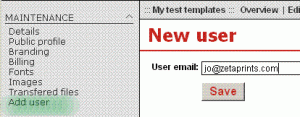

<?xml version="1.0" encoding="UTF-8"?><rss version="2.0"
	xmlns:content="http://purl.org/rss/1.0/modules/content/"
	xmlns:wfw="http://wellformedweb.org/CommentAPI/"
	xmlns:dc="http://purl.org/dc/elements/1.1/"
	xmlns:atom="http://www.w3.org/2005/Atom"
	xmlns:sy="http://purl.org/rss/1.0/modules/syndication/"
	xmlns:slash="http://purl.org/rss/1.0/modules/slash/"
	>

<channel>
	<title>Web-to-Print &#8211; On web to print sofware, solutions and hosted services</title>
	<atom:link href="http://www.zetaprints.com/blog/tag/web-to-print/feed/" rel="self" type="application/rss+xml" />
	<link>http://www.zetaprints.com/blog</link>
	<description>From web to print and everything in between</description>
	<lastBuildDate>Fri, 02 Aug 2013 10:44:32 +0000</lastBuildDate>
	<language>en-US</language>
	<sy:updatePeriod>hourly</sy:updatePeriod>
	<sy:updateFrequency>1</sy:updateFrequency>
	<generator>https://wordpress.org/?v=4.4.1</generator>
	<item>
		<title>Yahoo mail lost the plot</title>
		<link>http://www.zetaprints.com/blog/2010/06/12/yahoo-mail-lost-the-plot/</link>
		<comments>http://www.zetaprints.com/blog/2010/06/12/yahoo-mail-lost-the-plot/#respond</comments>
		<pubDate>Sat, 12 Jun 2010 10:53:53 +0000</pubDate>
		<dc:creator><![CDATA[admin]]></dc:creator>
				<category><![CDATA[Problems and outages]]></category>
		<category><![CDATA[mail]]></category>
		<category><![CDATA[we]]></category>
		<category><![CDATA[Web-to-Print]]></category>
		<category><![CDATA[yahoo]]></category>

		<guid isPermaLink="false">http://www.zetaprints.com/blog/?p=570</guid>
		<description><![CDATA[A lot of emails sent to Yahoo mail users get delayed by Yahoo and then blocked. There is absolutely no reason for them to do so as we only send transactional emails about web-to-print orders and registration info. Our IP address is not listed in any spam databases either. No good as it&#8217;s hurting web-to-print [&#8230;]]]></description>
				<content:encoded><![CDATA[<p>A lot of emails sent to Yahoo mail users get delayed by Yahoo and then blocked.</p>
<p>There is absolutely no reason for them to do so as we only send transactional emails about web-to-print orders and registration info. Our IP address is not listed in any spam databases either. No good as it&#8217;s hurting web-to-print sales of our customers. </p>
<p>We contacted Yahoo about this, so hopefully it will get resolved in the coming hours.</p>
<p>In the meantime, it may be a good idea to follow up customers with @yahoo.com emails personally.</p>
<p>We&#8217;d like to see all non-delivery reports, if you can be bothered.</p>
]]></content:encoded>
			<wfw:commentRss>http://www.zetaprints.com/blog/2010/06/12/yahoo-mail-lost-the-plot/feed/</wfw:commentRss>
		<slash:comments>0</slash:comments>
		</item>
		<item>
		<title>New user management feaures</title>
		<link>http://www.zetaprints.com/blog/2008/04/07/new-user-management-feaures/</link>
		<comments>http://www.zetaprints.com/blog/2008/04/07/new-user-management-feaures/#respond</comments>
		<pubDate>Mon, 07 Apr 2008 07:42:43 +0000</pubDate>
		<dc:creator><![CDATA[admin]]></dc:creator>
				<category><![CDATA[Web-to-Print]]></category>
		<category><![CDATA[web-to-print features]]></category>
		<category><![CDATA[web-to-print software]]></category>
		<category><![CDATA[ZetaPrints features]]></category>
		<category><![CDATA[zetaprints]]></category>

		<guid isPermaLink="false">http://www.zetaprints.com/blog/?p=194</guid>
		<description><![CDATA[Released only minutes ago, some long awaited user management features to make life of web-to-print printer accounts easier. Add user and User profile page You can add a user to the web-to-print database and then assign the user to multiple web-to-print catalogs using a new user profile page. You can still do it per-catalog. Full [&#8230;]]]></description>
				<content:encoded><![CDATA[<p>Released only minutes ago, some long awaited user management features to make life of <em>web-to-print printer accounts</em> easier.</p>
<h2>Add user and User profile page</h2>
<p>You can add a user to the web-to-print database and then assign the user to multiple web-to-print catalogs using a new user profile page. You can still do it <a title="web-to-print user management" href="../../../../help/adding-new-users/">per-catalog</a>.</p>
<p>Full user profiles can be viewed on the new user profile page. Profiles accessible through <em>Add user</em> or clicking on user name in lists of users per catalog.</p>
<p></p>
<p>You can edit profiles of your customers, but only for those without a password. Once the password is set up the profile can be edited by the user only.  <a title="centralized web-to-print user management" href="../../../../help/user-management-centralized/">More &#8230;</a></p>
<h2>Anonymous orders can be assigned to users</h2>
<p>An order placed by an unregistered user can be assigned to an existing user or a new one. Click on Assign to user link on order details page and follow the instruction.  <a title="anonymous web-to-print orders" href="../../../../help/anonymous-orders/">More &#8230;</a></p>
<p></p>
]]></content:encoded>
			<wfw:commentRss>http://www.zetaprints.com/blog/2008/04/07/new-user-management-feaures/feed/</wfw:commentRss>
		<slash:comments>0</slash:comments>
		</item>
	</channel>
</rss>

<!-- Localized -->